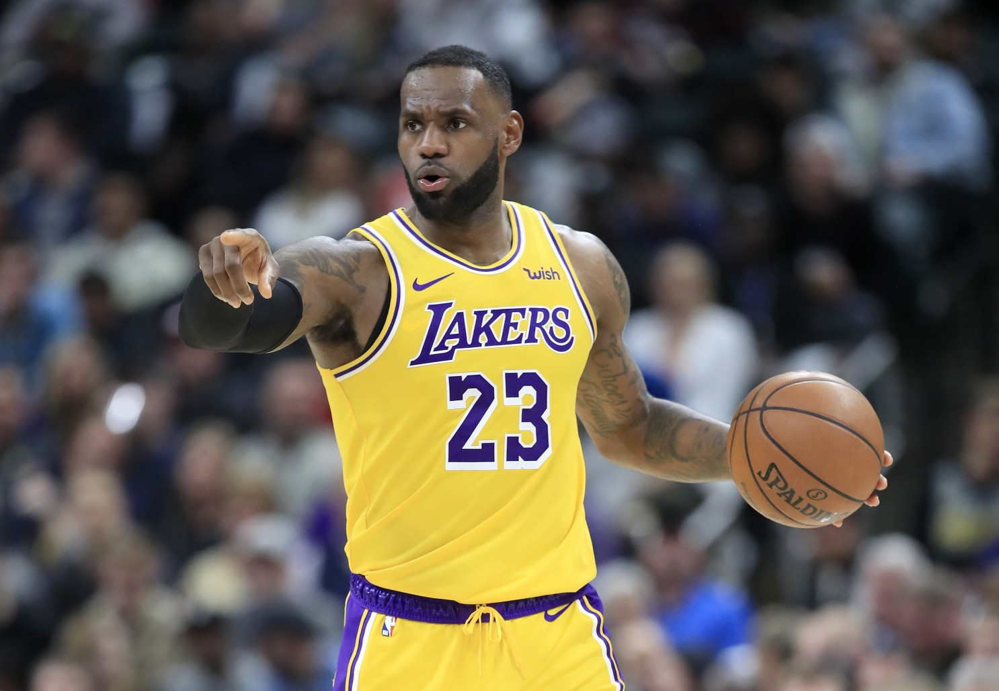

LeBron James Tribute Page

Photo of LeBron Dunking While Playing for the Lakers
Why is LeBron James the Greatest Basketball Player Ever?
High School Career (1999-2003):
- LeBron played basketball and football for St. Vincent-St. Mary High School where he grew up in Akron, Ohio
- As a freshman, he averaged 21 points and 6 rebounds to lead his team to a perfect 27-0 record and state championship
- By his junior year, he averaged 29 points a game and was featured on the cover of Sports Illustrated at just 17 years old. He was also the first junior to be named male basketball Gatorade National Player of the Year.
- After his senior year, he decided to skip college and become the number one draft pick in the 2003 NBA draft
First Stint with Cleveland (2003-2010)
- James' posted 25 points in his NBA debut, the most by any prep-to-pro player. He eventually won the Rookie of the Year award for the 2003-2004 season.
- In his sophomore season (2004-2005), he earned his first of many consecutive all-star appearances.
- James won his first All-Star Game MVP during the 2006 all-star game.
- During the 2007 playoffs against the Detroit Pistons, James scored 29 of Cleveland's last 30 points to win the game. In these same playoffs, at 22 years old, LeBron took what some say "the worst team ever" to the NBA finals, which they eventually lost in 4 games.
- He won his first NBA Most Valuable Player award in 2009. He then won his second in 2010. Despite these personal accomplishments, winning a championship was still a void for him in his career.
- On July 8, 2010, James went on national television and announced he was taking his talents to Miami to link up with other NBA stars Dwyane Wade and Chris Bosh
Miami Heat (2010-2014)
- Upon "The Decision" many people criticized James for going to Miami to link up with two All-Stars.
- Despite starting off slow in the 2010-2011 season, the Heat went on to the NBA finals but ultimately lost in 6 games to the Dallas Mavericks.
- The 2011-2012 season brought LeBron James his 3rd MVP award and his first ever NBA Championship trophy. He was also named Finals MVP for the first time.
- The 2012-2013 season brought LeBron his 4th MVP award and his second NBA championship. He was then named Finals MVP for the second time.
- After the 2014 Finals loss to the San Antonio Spurs, LeBron decided to leave the Miami Heat and return to the Cleveland Cavaliers
Second Stint with Cleveland (2014-2018)
- LeBron went back to Cleveland to play with two budding stars in Kyrie Irving and Kevin Love.
- James reached the NBA Finals for the 6th time in 2015, but due to injuries to Kyrie Irving and Kevin Love, his extremely dominant performance could not propel him past the Golden State Warriors.
- He met the Warriors in the NBA finals for his 7th stint in 2016 (6th consecutive) and ended up being down 3 games to 1 to the Warriors. Despite this, James continued to have one of the greatest finals performances of all time and lead his team to the first 3-1 comback in finals history. He won his 3rd NBA championship and his 3rd Finals MVP.
- James met the Warriors in the Finals for the next two seasons again, but after NBA Superstar Kevin Durant signed with the already-powerhouse Warriors, James lost the finals to them in consecutive seasons. His performances remained absolutely dominant, but the Cavs did not have the team personnel to beat them.
Los Angeles Lakers (2018-Present)
- James ultimately left Cleveland and decided to move out to the warm weather in LA and play with some young, budding stars. After a surprisingly good start with this team and being 4th in the western conference, James sustained a groin injury and the Lakers lost their playoff chances for the 2018-2019 season.
- The Lakers traded for NBA superstar Anthony Davis in the 2019 season and this moved LeBron to a permenant point guard role.
- Many people were suprised when LeBron lead the Lakers to a 17-2 start in his 17th NBA season, the best in Lakers franchise history.
- On January 25, 2020, LeBron passed the late-great Kobe Bryant for 3rd on the NBA's all time scoring list.
- The NBA was suspended on March 11, 2020 due to the Coronavirus Pandemic, which brings many unknown questions to how the rest of LeBron's legacy will play out.